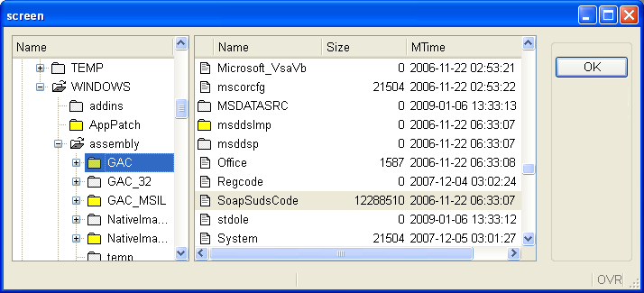
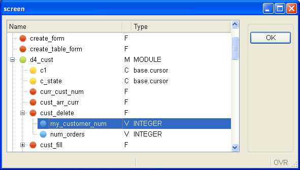

Summary:
See also: Arrays, Records, Result Sets, Programs, Windows, Forms, Display Array, Drag andDrop.
Before reading these lines, you should be familiar with form TABLE containers and you must know how to program a singular DISPLAY ARRAY or a DISPLAY ARRAY sub-dialog within a DIALOG instruction.
Typical GUI tree-views can be implemented with Genero by using a DISPLAY ARRAY instruction with a screen-array bound to a TREE container with tree-view specific attributes. TREE containers are very similar to TABLE containers, except that the first columns are used to display a tree of nodes on the right of the widget.
The next screen-shot shows a typical file browser written in Genero, this example implements a DIALOG instruction with two DISPLAY ARRAY sub-dialogs. The first DISPLAY ARRAY sub-dialog controls the tree-view while the second one controls the file list on the right side:

The data used to display tree-view nodes must be provided in a program array and controlled by a DISPLAY ARRAY. It is possible to control a tree-view table with a singular DISPLAY ARRAY or with a DISPLAY ARRAY sub-dialog within a DIALOG instruction.
In Genero, a tree-view model is implemented with a flat program array (i.e. a list of rows), where each row defines parent/child node identifiers to describe the structure of the tree; so, the order of the rows matters:
Tree structure parent-id child-id Node 1 NULL 1 Node 1.1 1 1.1 Node 1.2 1 1.2 Node 1.2.1 1.2 1.2.1 Node 1.2.2 1.2 1.2.2 Node 1.2.3 1.2 1.2.3 Node 1.3 1 1.3 Node 1.3.1 1.3 1.3.1 ... ... ....
Depending on your need, you can fill the program array with all rows of the tree before dialog execution, or you can fill or reduce the list of nodes dynamically upon expand / collapse action events. In the second case, you must provide additional information for each row of the program array, to indicate whether the node has children. A dynamic build of the tree-view allows you to implement programs displaying very large trees, for example in a bill of materials application, where thousands of elements can be assembled together.
Note that tree-views can display additional columns for each node, to show specific row data as in a regular table:

Create a form specification file containing a TREE container bound to a screen array. The screen array identifies the presentation elements to be used by the runtime system to display the tree-view and the additional columns.
A TREE container must be present in the LAYOUT section of the form, defining the columns of the tree-view list. The TREE container must hold at least one column defining the node texts (or names). This column will be used on the front-end side to display the tree-view widget. Additional columns can be added in the TREE container to display node information. The TREE container attributes must be declared in the ATTRIBUTES section, as explained below.
Secondary form fields have to be used to hold tree node information such as icon image, parent node id, current node id, expanded flag and parent flag. While these secondary fields can be defined as regular form fields and displayed in the tree-view list, we recommend that you use PHANTOM fields instead: Phantom fields can be listed in the screen-array but do not need to be part of the LAYOUT section. Phantom fields will only be used by the runtime system to build the tree of nodes.
01LAYOUT02GRID03{04<Tree tv >05Tree06[name |desc ]07[name |desc ]08[name |desc ]09[name |desc ]10[name |desc ]11< >12}13END14END15ATTRIBUTES16TREE tv : mytree,17PARENTIDCOLUMN=parentid, IDCOLUMN=id,18EXPANDEDCOLUMN=expanded, ISNODECOLUMN=isnode;19EDIT name = FORMONLY.name, IMAGECOLUMN=image;20PHANTOM FORMONLY.image;21PHANTOM FORMONLY.parentid;22PHANTOM FORMONLY.id;23PHANTOM FORMONLY.expanded;24PHANTOM FORMONLY.isnode;25EDIT desc = FORMONLY.description;26END27INSTRUCTIONS28SCREEN RECORD sr( FORMONLY.* );29END
Warning: The first visual column (name in above example) must be the field defining the node names, and the widget must be an EDIT or LABEL.
In the ATTRIBUTES section, you must define the TREE form element with the following attributes:
The other items of the ATTRIBUTES section define tree-view form fields grouped in a screen-array declared in the INSTRUCTIONS section. The form fields required to declare a tree-view table are the following:
| Fields | Mandatory | Default name | Description |
| Field #1, used to hold the node names | yes | N/A | Defines the text to be displayed for a node |
| Field #2, with fieldname defined by PARENTIDCOLUMN | yes | parentid | Holds the parent node id, defaults to "parentid" if the PARENTIDCOLUMN attribute is not used. |
| Field #3, with fieldname defined by IDCOLUMN | yes | id | Holds the id of the current node, defaults to "id" if the IDCOLUMN attribute is not used. |
| Field #3, with fieldname defined by IMAGECOLUMN of the first field | no | N/A | Defines the icon image for a node |
| Field #4, with fieldname defined by EXPANDEDCOLUMN | no | no | Indicator set to 1 if the node is expanded |
| Field #5, with fieldname defined by ISNODECOLUMN | no | no | Indicator set to 1 if the node has children |
Warning: The first three fields (node text, parent id and node id) are mandatory.
The first field can define the IMAGECOLUMN attribute, if you need to display node-specific images. The images will then be specified within the field defined by the IMAGECOLUMN attribute. Alternatively you can globally define images for all nodes with the IMAGEEXPANDED, IMAGECOLLAPSED and the IMAGELEAF attributes of the TREE form element.
In the program code, you must define a dynamic array of records with the DEFINE instruction. The Genero runtime system will use that program array as the model for the tree-view list. A tree of nodes will be automatically built according to the data found in the program array. The front-end can then render the tree of nodes in a tree-view list.
The members of the program array must correspond to the elements of the screen-array of the tree table, by number and data types.
The name of the array members does not matter; the purpose of each member is defined by the name of the corresponding screen-array members declared in the form file. Program array members and screen-array members are bound by position.
The next code example defines a program array with a member structure corresponding to the screen-array defined in the form example of the previous section.
01DEFINE tree_arr DYNAMIC ARRAY OF RECORD02name STRING, -- text to be displayed for the node03image STRING, -- name of the image file for the node (can be null)04pid STRING, -- id of the parent node05id STRING, -- id of the current node06expanded BOOLEAN, -- node expansion flag (TRUE/FALSE) (optional)07isnode BOOLEAN, -- children indicator flag (TRUE/FALSE) (optional)08description STRING -- user field describing the node09END RECORD
The name, image, pid, id members are mandatory. These hold respectively the node text, icon, parent and current node identifiers that define the structure of the tree.
The expanded member can be used to handle node expansion by program. You can query this member to check whether a node is expanded, or set the value to expand a specific node.
The isnode member can be used to indicate whether a given node has children, without filling the array with rows defining the child nodes. This information will be used by front-ends to decorate a node as a parent, even if no children are present. The program should then fill the array with child nodes when an expand action is fired (see Dynamic filling of very large trees).
Note that the program array can hold more columns (like the description field), which can be displayed in regular table columns as part of a node's data.
Remember the order of the program array members must match the screen-array members in the form file, but this order can be different from the column order used in the layout, with the exception of the first column defining the text of nodes (i.e. name field in above example).
Once the program array is defined according to the screen-array of the tree-view table, you must fill the rows with the correct parent/child relationships defining the structure of the tree.
Warning: You can safely fill the program array directly before the dialog execution or in BEFORE DISPLAY / BEFORE DIALOG control blocks. However, once the dialog has started, you must use DIALOG methods such as insertNode() if you want to modify the tree, otherwise secondary data information like multi-range selection and cell attributes will not be synchronized.
The rows must be filled in the correct order, to reflect the parent/child relationship.
Warning: If a row defines a tree-view node with a parent identifier that does not exist, or if the child row is inserted under the wrong parent row, the orphan row will become a new node at the root of the tree.
In order to fill the program array with database rows defining the tree structure, you will need to write a recursive function, keeping track of the current level of the nodes to be created for a given parent.
The next example shows how to fill the array with data coming from a database table having the following structure:
CREATE TABLE dbtree (
id SERIAL NOT NULL,
parentid INTEGER NOT NULL,
name VARCHAR(20) NOT NULL
)
The difficulty with fetching a tree from a database table is in the cursor management, which can not be used recursively. A workaround for this problem is to fetch all the children of a given node at once, then call the function recursively for each of the fetched nodes:
01TYPE tree_t RECORD02id INTEGER,03parentid INTEGER,04name VARCHAR(20)05END RECORD0607DEFINE tree_arr tree_t0809FUNCTION fetch_tree(pid)10DEFINE pid, i, j, n INTEGER11DEFINE a DYNAMIC ARRAY OF tree_t12DEFINE t tree_t1314DECLARE cu1 CURSOR FOR SELECT * FROM dbtree WHERE parentid = pid15LET n = 016FOREACH cu1 INTO t.*17LET n = n + 118LET a[n].* = t.*19END FOREACH2021FOR i = 1 TO n22LET j = tree_arr.getLength() + 123LET tree_arr[j].name = a[i].name24LET tree_arr[j].id = a[i].id25LET tree_arr[j].parentid = a[i].parentid26CALL fetch_tree(a[i].id)27END FOR2829END FUNCTION
After the program array has been filled, you must execute a DISPLAY ARRAY instruction. This can be a singular DISPLAY ARRAY or a DISPLAY ARRAY sub-dialog within a DIALOG instruction.
The next code example implements a DISPLAY ARRAY binding the program array called tree_arr to the sr screen-array, attaching the dialog to the tree table defined in the form:
01DISPLAY ARRAY tree_arr TO sr.* ATTRIBUTES(UNBUFFERED)02BEFORE DISPLAY03CALL fell_tree(tree_arr)04BEFORE ROW05DISPLAY "Current row is: ", DIALOG.getCurrentRow("sr")06END DISPLAY
Warning: It is not possible to use the paged mode (ON FILL BUFFER) when the decoration is a treeview list. The dialog needs the complete set of open nodes with parent/child relation to handle the treeview display, with the paged mode only a given window of the dataset is known by the dialog. If you use a the paged mode in DISPLAY ARRAY with a treeview as decoration, the program will raise an error at runtime. TreeViews can be filled dynamically with ON EXPAND / ON COLLAPSE triggers. See Dynamic filling of very large trees for more details.
If needed, you can implement traditional DISPLAY ARRAY control blocks like BEFORE ROW or AFTER ROW:
01DISPLAY ARRAY tree_arr TO sr.* ATTRIBUTES(UNBUFFERED)02BEFORE ROW03DISPLAY "BEFORE ROW - Current row is: ", DIALOG.getCurrentRow("sr")04AFTER ROW05DISPLAY "AFTER ROW - Current row is: ", DIALOG.getCurrentRow("sr")06END DISPLAY
When a huge tree needs to be displayed (for example, when implementing a bill of materials application), you should optimize tree data filling by creating the nodes on demand. There is no need to fill the complete program array with all possible nodes (down to the last leaf), when only the first levels/branches of the tree are displayed on the screen.
To implement a dynamically filled tree, you need first to define an additional column in the tree-table, to indicate whether a given node has children. That field will be used by Genero to render a node with a [+] button, and let the end user click on the node to expand it, even if no child nodes are created yet.
In the DISPLAY ARRAY code, if a node is expanded (or collapsed), the dialog will fire the ON EXPAND (or ON COLLAPSE) triggers, to let the program add (or remove) rows in the array, to adapt the tree data dynamically according to navigation events.
01DEFINE row_index INTEGER02...03DISPLAY ARRAY tree_arr TO sr.* ATTRIBUTES(UNBUFFERED)04ON EXPAND (row_index)05DISPLAY "EXPAND - Expanded row is : ", row_index06-- Fill with children nodes for tree_arr[row_index]07ON COLLAPSE (row_index)08DISPLAY "COLLAPSE - Collapsed row is: ", row_index09-- Remove children nodes of tree_arr[row_index]10END DISPLAY
Warning: While you can safely fill the program array directly before the dialog execution, once the dialog has started, you must use DIALOG methods such as insertNode() to modify the tree, otherwise secondary data information like multi-range selection and cell attributes will not be synchronized. This is typically the case when implementing a dynamically-filled tree with ON EXPAND / ON COLLAPSE triggers.
See also Example 2 implementing dynamic tree filling.
By default, the built-in sort is enabled when you use a TREE container; when the end user clicks on column headers, the runtime system sorts the visual representation of the program array. Tree nodes are ordered by levels; the children nodes are ordered inside a given parent node.
This is a powerful built-in feature. However, in some cases, the tree structure must be static (i.e. the order of the nodes must not change) and you don't want the end user to sort the rows. To prevent the built-in sort, use the UNSORTABLECOLUMNS attribute for the TREE container:
01LAYOUT02...03END04ATTRIBUTES05TREE tv : mytree, UNSORTABLECOLUMNS, ...06...
Multi-row selection can be used with a DISPLAY ARRAY controlling a TREE container. However, because of the tree-view ergonomic differences with simple tables, the selection of tree nodes follows some specific rules:
See also the topic discussing multi-row selection.
It is possible to implement Drag and Drop with a DISPLAY ARRAY controlling a TREE container. The nodes can be moved around in the same tree, can be dropped outside the tree or can be inserted in the tree from external sources.
For more details, see Drag & Drop.
Form file:
01LAYOUT02GRID03{04<Tree t1 >05Name Index06[c1 |c2 ]07[c1 |c2 ]08[c1 |c2 ]09[c1 |c2 ]10}11END12END1314ATTRIBUTES15LABEL c1 = FORMONLY.name;16LABEL c2 = FORMONLY.idx;17PHANTOM FORMONLY.pid;18PHANTOM FORMONLY.id;19PHANTOM FORMONLY.exp;20TREE t1: tree121IMAGEEXPANDED = "open",22IMAGECOLLAPSED = "folder",23IMAGELEAF = "file",24PARENTIDCOLUMN = pid,25IDCOLUMN = id,26EXPANDEDCOLUMN = exp;27END2829INSTRUCTIONS30SCREEN RECORD sr_tree(name, pid, id, idx, exp);31END
Static tree DISPLAY ARRAY:
01DEFINE tree DYNAMIC ARRAY OF RECORD02name STRING,03pid STRING,04id STRING,05idx INT,06expanded BOOLEAN07END RECORD0809MAIN10OPEN FORM f FROM "stat-tree"11DISPLAY FORM f12CALL fill(4)13DISPLAY ARRAY tree TO sr_tree.* ATTRIBUTE(UNBUFFERED)14BEFORE ROW15DISPLAY "Current row : ", arr_curr()16END DISPLAY17END MAIN1819FUNCTION fill(max_level)20DEFINE max_level, p INT21CALL tree.clear()22LET p = fill_tree(max_level, 1, 0, NULL)23END FUNCTION2425FUNCTION fill_tree(max_level, level, p, pid)26DEFINE max_level, level INT27DEFINE p INT28DEFINE i INT29DEFINE id, pid STRING30DEFINE name STRING31IF level < max_level THEN32LET name = "Node "33ELSE34LET name = "Leaf "35END IF36FOR i = 1 TO level37LET p = p + 138IF pid IS NULL THEN39LET id = i40ELSE41LET id = pid || "." || i42END IF43LET tree[p].id = id44LET tree[p].pid = pid45LET tree[p].idx = p46LET tree[p].expanded = FALSE47LET tree[p].name = name || level || '.' || i48IF level < max_level THEN49LET p = fill_tree(max_level, level + 1, p, id)50END IF51END FOR52RETURN p53END FUNCTION
Form file:
01LAYOUT02GRID03{04<Tree t1 >05Name Description06[c1 |c2 ]07[c1 |c2 ]08[c1 |c2 ]09[c1 |c2 ]10}11END12END1314ATTRIBUTES15LABEL c1 = FORMONLY.name;16PHANTOM FORMONLY.pid;17PHANTOM FORMONLY.id;18PHANTOM FORMONLY.hasChildren;19LABEL c2 = FORMONLY.descr;20TREE t1: tree121IMAGEEXPANDED = "open",22IMAGECOLLAPSED = "folder",23IMAGELEAF = "file",24PARENTIDCOLUMN = pid,25IDCOLUMN = id,26ISNODECOLUMN = hasChildren;27END2829INSTRUCTIONS30SCREEN RECORD sr_tree(FORMONLY.*);31END
Dynamic tree DISPLAY ARRAY:
01DEFINE tree DYNAMIC ARRAY OF RECORD02name STRING,03pid STRING,04id STRING,05hasChildren BOOLEAN,06description STRING07END RECORD0809MAIN10DEFINE id INTEGER1112OPEN FORM f FROM "dyna-tree"13DISPLAY FORM f1415LET tree[1].pid = 016LET tree[1].id = 117LET tree[1].name = "Root"18LET tree[1].hasChildren = TRUE19DISPLAY ARRAY tree TO sr_tree.* ATTRIBUTE(UNBUFFERED)20BEFORE DISPLAY21CALL DIALOG.setSelectionMode("sr_tree",1)22ON EXPAND(id)23CALL expand(DIALOG,id)24ON COLLAPSE(id)25CALL collapse(DIALOG,id)26END DISPLAY27END MAIN2829FUNCTION collapse(d,p)30DEFINE d ui.Dialog31DEFINE p INT32WHILE p < tree.getLength()33IF tree[p + 1].pid != tree[p].id THEN EXIT WHILE END IF34CALL d.deleteNode("sr_tree", p + 1)35END WHILE36END FUNCTION3738FUNCTION expand(d,p)39DEFINE d ui.Dialog40DEFINE p INT41DEFINE id STRING42DEFINE i, x INT43FOR i = 1 TO 444LET x = d.appendNode("sr_tree", p)45LET id = tree[p].id || "." || i46LET tree[x].id = id47-- tree[x].pid is implicitly set by the appendNode() method...48LET tree[x].name = "Node " || id49IF i MOD 2 THEN50LET tree[x].hasChildren = TRUE51ELSE52LET tree[x].hasChildren = FALSE54END IF55LET tree[x].description = "This is node " || tree[x].name56END FOR57END FUNCTION